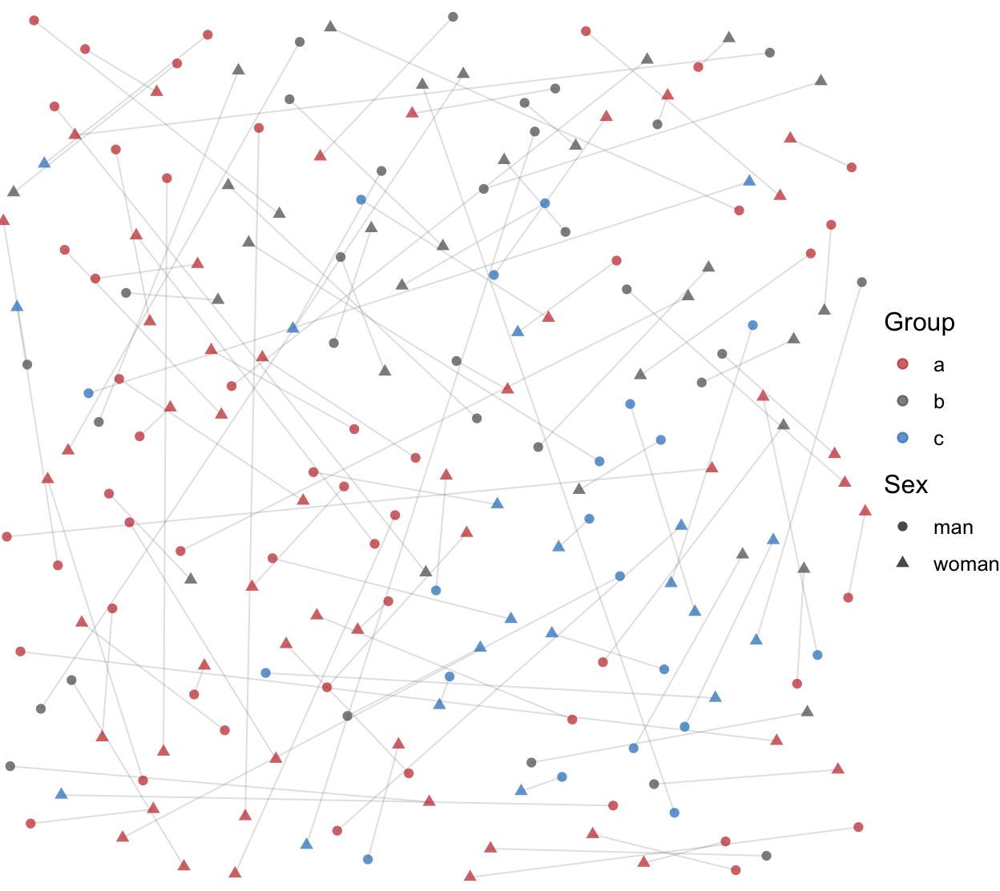

source("../_matching-simulation.R")
market <- simulate_actors_and_locations(seed = 543)
men <- market$men
women <- market$women
partner_market <- match_partners(men, women)
matched_pairs <- partner_market$matched_pairsAssigning Partners With Gale-Shapley Matching
assortative mating
matching
simulation
The second note in the series: construct two-sided partner utilities and use Gale-Shapley matching to create stable pairs.
From Actors to Preferences
The previous note created actors and locations. This note turns those actors into a two-sided matching market. Men and women evaluate potential partners using the same broad ingredients: group membership, age gap, geographic distance, and a person-specific attractiveness component.
Partner Utility
The utility construction is deliberately simple. A potential partner is more attractive when they are from the same group, closer in age, closer in space, and higher on an individual attractiveness term. The attractiveness term is observed by actors in the simulation, but it is useful to think of it as partly unobserved from the analyst’s point of view.
tibble(
component = names(preference_weights),
weight = unlist(preference_weights)
)# A tibble: 5 × 2
component weight
<chr> <dbl>
1 same_group 0.5
2 age_gap -0.1
3 distance -1
4 attractiveness 1
5 noise 2 partner_market$men_to_women |>
transmute(
same_group = preference_weights$same_group * as.numeric(same_group),
age_gap = preference_weights$age_gap * age_gap,
distance = preference_weights$distance * log(distance + 0.01),
attractiveness = preference_weights$attractiveness * candidate_attractiveness
) |>
pivot_longer(everything(), names_to = "component", values_to = "value") |>
group_by(component) |>
summarize(sd = sd(value), .groups = "drop") |>
arrange(desc(sd))# A tibble: 4 × 2
component sd
<chr> <dbl>
1 distance 0.574
2 age_gap 0.522
3 attractiveness 0.358
4 same_group 0.243Gale-Shapley Matching
The simulation uses matchingR::galeShapley.marriageMarket(). Men propose in this version. Women rank potential male partners and may trade up as proposals arrive. The algorithm ends when no proposer can improve by continuing to propose.
One informal way to read the algorithm is:
- Each man proposes to his highest-ranked woman who has not yet rejected him.
- Each woman provisionally keeps her favorite proposal so far.
- Rejected men propose again.
- The process stops when no man remains unmatched and able to propose.
The resulting matching is stable in the Gale-Shapley sense.
tibble(
men = n_distinct(partner_market$matches$man_id),
women = n_distinct(partner_market$matches$woman_id),
matches = nrow(partner_market$matches),
stable = galeShapley.checkStability(
partner_market$male_utilities,
partner_market$female_utilities,
partner_market$matching$proposals,
partner_market$matching$engagements
)
)# A tibble: 1 × 4
men women matches stable
<int> <int> <int> <lgl>
1 100 100 100 TRUE What Matching Changes
The matched pairs are much more similar than all possible man-woman pairs. This is partly because people prefer similar and nearby partners, and partly because two-sided competition determines who is actually available to whom.
matched_pairs |>
select(same_group, age_gap, distance) |>
summary() same_group age_gap distance
Min. :0.00 Min. : 0.04811 Min. :0.03495
1st Qu.:0.00 1st Qu.: 0.99378 1st Qu.:0.13796
Median :1.00 Median : 2.62286 Median :0.23896
Mean :0.53 Mean : 4.02566 Mean :0.30212
3rd Qu.:1.00 3rd Qu.: 5.19851 3rd Qu.:0.41170
Max. :1.00 Max. :21.44226 Max. :0.88399 all_possible_pairs(men, women) |>
select(same_group, age_gap, distance) |>
summary() same_group age_gap distance
Min. :0.00 Min. :2.982e-04 Min. :0.02368
1st Qu.:0.00 1st Qu.:2.959e+00 1st Qu.:0.33148
Median :0.00 Median :6.177e+00 Median :0.50874
Mean :0.38 Mean :7.215e+00 Mean :0.52105
3rd Qu.:1.00 3rd Qu.:1.074e+01 3rd Qu.:0.70416
Max. :1.00 Max. :2.481e+01 Max. :1.26079 matched_pairs |>
count(man_group, woman_group) |>
pivot_wider(names_from = woman_group, values_from = n, values_fill = 0)# A tibble: 3 × 4
man_group a b c
<chr> <int> <int> <int>
1 a 31 12 7
2 b 13 13 4
3 c 6 5 9ggplot() +
geom_segment(
data = matched_pairs,
aes(x = man_x, y = man_y, xend = woman_x, yend = woman_y),
color = "#555c60",
alpha = 0.18,
linewidth = 0.35
) +
geom_point(
data = market$singles,
aes(x, y, color = group, shape = sex),
alpha = 0.72,
size = 1.8
) +
coord_equal(xlim = c(0, 1), ylim = c(0, 1), expand = FALSE) +
scale_color_manual(values = group_colors) +
labs(x = "Spatial coordinate x", y = "Spatial coordinate y", color = "Group", shape = "Sex") +
theme_void(base_size = 12)
The next note starts from the matched pairs and asks a more statistical question: how do conditional-logit and loglinear models describe the group-level association pattern?